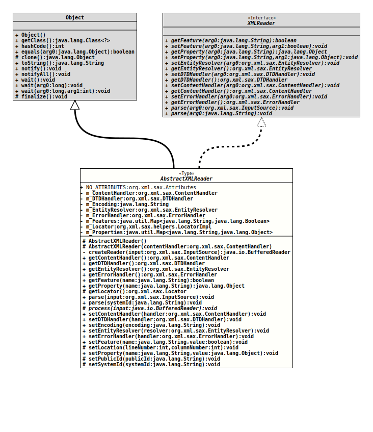

Module org.tquadrat.foundation.xml
Class AbstractXMLReader
java.lang.Object
org.tquadrat.foundation.xml.parse.AbstractXMLReader
- All Implemented Interfaces:
XMLReader
@ClassVersion(sourceVersion="$Id: AbstractXMLReader.java 1030 2022-04-06 13:42:02Z tquadrat $")
@API(status=STABLE,
since="0.0.5")
public abstract class AbstractXMLReader
extends Object
implements XMLReader
This class is an abstract base implementation for a XMLReader. Use this
class as a base class for SAX based parsers that will parse other formats
than XML. This is quite useful in combination with XSLT. Refer to the
description for the abstract method
process()
for a brief run-through how to use this class.- Author:
- Thomas Thrien (thomas.thrien@tquadrat.org)
- Version:
- $Id: AbstractXMLReader.java 1030 2022-04-06 13:42:02Z tquadrat $
- Since:
- 0.0.5
- See Also:
- UML Diagram
-

UML Diagram for "org.tquadrat.foundation.xml.parse.AbstractXMLReader"
{kind=link}
-
Field Summary
FieldsModifier and TypeFieldDescriptionprivate ContentHandlerThe content handler that provides the data to parse.private DTDHandlerThe DTD handler used by this XMLReader; usuallynull.private StringThe encoding that is used for the input source.private EntityResolverThe entity resolver that is used by this XMLReader.private ErrorHandlerThe error handler that is used by this XMlReader.The features that are supported by this XMLReader.private final LocatorImplThe locator that is maintained by this XML reader.The properties that are set for this XMLReader.static final AttributesAn empty attribute set. -
Constructor Summary
ConstructorsModifierConstructorDescriptionprotectedThe default constructor.protectedAbstractXMLReader(ContentHandler contentHandler) Creates a new instance of AbstractXMLReader and assigns the given content handler. -
Method Summary
Modifier and TypeMethodDescriptionprivate BufferedReadercreateReader(InputSource input) Creates a buffered reader from the given input source.final ContentHandlerReturns the current content handler.final DTDHandlerReturns the current DTD handler.final EntityResolverReturns the current entity resolver.final ErrorHandlerReturns the current error handler.booleangetFeature(String name) As this is not meant as a base for an XML parser, this implementation does not recognise the required namespaces.protected final LocatorReturns a reference to the locator object provided by this base implementation.getProperty(String name) Returns the value for the property with the given name.final voidParses an XML document from a system identifier (URI).
This method is a shortcut for the common case of reading a document from a system identifier.final voidparse(InputSource input) Parses an input data source.
The application can use this method to instruct the XML reader to begin parsing a document from any valid input source (a character stream, a byte stream, or a URI).
Applications may not invoke this method while a parse is in progress (they should create a new XMLReader instead for each nested document).protected abstract voidprocess(BufferedReader input) This method has to be implemented in order to perform the parsing.final voidsetContentHandler(ContentHandler handler) Sets the content handler used by this XMLReader.final voidsetDTDHandler(DTDHandler handler) Sets the DTD handler used by this XMLReader.final voidsetEncoding(String encoding) Sets the encoding for the input source.final voidsetEntityResolver(EntityResolver resolver) Sets the entity resolver that is used by this XMLReader.final voidsetErrorHandler(ErrorHandler handler) Sets the error handler that is used by this XMLReader.voidsetFeature(String name, boolean value) Sets the feature flag.protected final voidsetLocation(int lineNumber, int columnNumber) Sets the current location to the locator.voidsetProperty(String name, Object value) Sets the value of a property.protected final voidsetPublicId(String publicId) Sets the public id to the locator.protected final voidsetSystemId(String systemId) Sets the system id to the locator.
-
Field Details
-
NO_ATTRIBUTES
An empty attribute set. -
m_ContentHandler
The content handler that provides the data to parse. -
m_DTDHandler
The DTD handler used by this XMLReader; usuallynull. -
m_Encoding
The encoding that is used for the input source. Ifnull, the platform specific encoding will be used. -
m_EntityResolver
The entity resolver that is used by this XMLReader. It is especially used byparse( InputSource ). -
m_ErrorHandler
The error handler that is used by this XMlReader. -
m_Features
The features that are supported by this XMLReader. -
m_Locator
The locator that is maintained by this XML reader. -
m_Properties
The properties that are set for this XMLReader.
-
-
Constructor Details
-
AbstractXMLReader
protected AbstractXMLReader()The default constructor. -
AbstractXMLReader
Creates a new instance of AbstractXMLReader and assigns the given content handler.- Parameters:
contentHandler- The content handler to use with this XMLReader.
-
-
Method Details
-
createReader
Creates a buffered reader from the given input source.- Parameters:
input- The input source.- Returns:
- The buffered reader for the input data.
- Throws:
IOException- Unable to create a reader from the input source.SAXException- Unable to interpret the data provided with the input source.
-
getContentHandler
Returns the current content handler.- Specified by:
getContentHandlerin interfaceXMLReader- Returns:
- A reference to the current content handler.
-
getDTDHandler
Returns the current DTD handler.- Specified by:
getDTDHandlerin interfaceXMLReader- Returns:
- A reference to the current DTD handler.
-
getEntityResolver
Returns the current entity resolver.- Specified by:
getEntityResolverin interfaceXMLReader- Returns:
- A reference to the current entity resolver.
-
getErrorHandler
Returns the current error handler. It will never returnnull; in case no handler was set, a reference to an instance ofDefaultErrorHandlerwill be returned.- Specified by:
getErrorHandlerin interfaceXMLReader- Returns:
- A reference to the current error handler.
-
getFeature
As this is not meant as a base for an XML parser, this implementation does not recognise the required namespaces. If this is needed, the derived class has to provide another implementation forgetFeature()andsetFeature().- Specified by:
getFeaturein interfaceXMLReader- Parameters:
name- The name of the feature.- Returns:
trueif the feature is supported,falseif not or if the name is unknown.- Throws:
SAXNotRecognizedException- The feature value cannot be retrieved.SAXNotSupportedException- The XMLReader recognizes the feature name but cannot determine its value at this time.
-
getProperty
Returns the value for the property with the given name. Usually, this property name is any fully-qualified URI. It is possible for an XMLReader to recognise a property name but temporarily be unable to return its value. Some property values may be available only in specific contexts, such as before, during, or after a parse.
XMLReaders are not required to recognise any specific property names, though an initial core set is documented for SAX2. But even that is not supported by this specific implementation; if this is a requirement, a derived class has to provide its own implementation ofgetProperty()andsetProperty().- Specified by:
getPropertyin interfaceXMLReader- Parameters:
name- The property name, which is a fully-qualified URI.- Returns:
- The current value of the property. If the name is not known,
nullwill be returned instead of throwing an exception. - Throws:
SAXNotRecognizedException- The property value can't be retrieved.SAXNotSupportedException- The XMLReader recognizes the property name but cannot determine its value at this time.- See Also:
-
getLocator
Returns a reference to the locator object provided by this base implementation.- Returns:
- The reference to the locator object.
-
parse
Parses an input data source.
The application can use this method to instruct the XML reader to begin parsing a document from any valid input source (a character stream, a byte stream, or a URI).
Applications may not invoke this method while a parse is in progress (they should create a new XMLReader instead for each nested document). Once a parse is complete, an application may reuse the same XMLReader object, possibly with a different input source. Configuration of the XMLReader object (such as handler bindings and values established for feature flags and properties) is unchanged by completion of a parse, unless the definition of that aspect of the configuration explicitly specifies other behavior (For example, feature flags or properties exposing characteristics of the document being parsed).
During the parse, the XMLReader will provide information about the document through the registered event handlers.
This method is synchronous: it will not return until parsing has ended. If a client application wants to terminate parsing early, it should throw an exception.
This implementation callsprocess()which is the user provided implementation for the parser.
If no content handler is set, this method returns immediately without any error message.- Specified by:
parsein interfaceXMLReader- Parameters:
input- The input source for the top-level of the document.- Throws:
IOException- An IO exception from the parser, possibly from a byte stream or character stream supplied by the application.SAXException- Any SAX exception, possibly wrapping another exception.- See Also:
-
parse
Parses an XML document from a system identifier (URI).
This method is a shortcut for the common case of reading a document from a system identifier. It is the exact equivalent of the following:
parse( new InputSource( systemId ) );
If the system identifier is a URL, it must be fully resolved by the application before it is passed to the parser.- Specified by:
parsein interfaceXMLReader- Parameters:
systemId- The system identifier (URI).- Throws:
IOException- An IO exception from the parser, possibly from a byte stream or character stream supplied by the application.SAXException- Any SAX exception, possibly wrapping another exception.- See Also:
-
process
This method has to be implemented in order to perform the parsing. It will be called either fromparse( String )orparse( InputSource ).
The implementation of this method should update the locator by appropriate calls tosetPublicId(),setSystemId(), andsetLocation()- if possible ...
The input is not meant to be XML, so it is difficult to describe here how to parse the input. But assuming that the input stream is a Java properties file, the implementation forprocess()might look like this:protected void process( BufferedReader input ) throws IOException, SAXException { ContentHandler handler = getContentHandler(); //---* Load the properties *--------------------------------------- ExtendedProperties properties = new ExtendedProperties(); properties.load( input ); //---* Create the document *--------------------------------------- handler.startDocument(); handler.startElement( null, null, "properties", new AttributesImpl() ); //---* Process the properties *------------------------------------ AttributesImpl attributes; char [] value; // Each property will be treated as a value with the key as its // attribute. for( String name : properties.stringPropertyNames() ) { //---* Start the element *------------------------------------- attributes = new AttributesImpl(); attributes.addAttribute( null, null, "name", "ID", name ); handler.startElement( null, null, "property", attributes ); //---* The element contents *---------------------------------- value = properties.getProperty( name ).toCharArray(); handler.characters( value, 0, value.length ); //---* End the element *--------------------------------------- handler.endElement( null, null, "property" ); } //---* Finish the document *--------------------------------------- handler.endElement( null, null, "properties" ); handler.endDocument(); } // process()- Parameters:
input- The input stream.- Throws:
IOException- Problems reading the input stream.SAXException- Something has gone wrong.
-
setContentHandler
Sets the content handler used by this XMLReader. It allows an application to register a content event handler.
If the application does not register a content handler, all content events reported by the SAX parser will be silently ignored.
Applications may register a new or different handler in the middle of a parse, and the SAX parser must begin using the new handler immediately.- Specified by:
setContentHandlerin interfaceXMLReader- Parameters:
handler- The content handler; may benull.
-
setDTDHandler
Sets the DTD handler used by this XMLReader. Allows an application to register a DTD event handler.
If the application does not register a DTD handler, all DTD events reported by the SAX parser will be silently ignored.
Applications may register a new or different handler in the middle of a parse, and the SAX parser must begin using the new handler immediately.- Specified by:
setDTDHandlerin interfaceXMLReader- Parameters:
handler- The DTD handler; may benull.
-
setEncoding
Sets the encoding for the input source.nullmeans that the platform specific encoding is used.- Parameters:
encoding- The encoding to use; may benull.
-
setEntityResolver
Sets the entity resolver that is used by this XMLReader. Allows an application to register an entity resolver.
If the application does not register an entity resolver, the XMLReader will perform its own default resolution.
Applications may register a new or different resolver in the middle of a parse, and the SAX parser must begin using the new resolver immediately.- Specified by:
setEntityResolverin interfaceXMLReader- Parameters:
resolver- The entity resolver; may benull.
-
setErrorHandler
Sets the error handler that is used by this XMLReader. Allows an application to register an error event handler.
If the application does not register an error handler, all error events reported by the SAX parser will be written toSystem.errand otherwise silently ignored; however, normal processing may not continue. It is highly recommended that all SAX applications implement an error handler to avoid unexpected bugs.
Applications may register a new or different handler in the middle of a parse, and the SAX parser must begin using the new handler immediately.- Specified by:
setErrorHandlerin interfaceXMLReader- Parameters:
handler- The error handler; may benull.- See Also:
-
setFeature
public void setFeature(String name, boolean value) throws SAXNotRecognizedException, SAXNotSupportedException Sets the feature flag.- Specified by:
setFeaturein interfaceXMLReader- Parameters:
name- The name of the feature.value-trueif the feature should be supported by this implementation,falseif not.- Throws:
SAXNotRecognizedException- The feature value cannot be assigned.SAXNotSupportedException- The XMLReader recognises the feature name but cannot set the requested value.- See Also:
-
setLocation
Sets the current location to the locator.- Parameters:
lineNumber- The current line number.columnNumber- The current column number.
-
setProperty
public void setProperty(String name, Object value) throws SAXNotRecognizedException, SAXNotSupportedException Sets the value of a property. Usually, the property name is any fully-qualified URI. It is possible for an XMLReader to recognize a property name but to be unable to change the current value. Some property values may be immutable or mutable only in specific contexts, such as before, during, or after a parse.
XMLReaders are not required to recognize setting any specific property names, though a core set is defined by SAX2. But only this is not implemented by this implementation.
This method is also the standard mechanism for setting extended handlers.- Specified by:
setPropertyin interfaceXMLReader- Parameters:
name- The property name, which is a fully-qualified URI.value- The requested value for the property.- Throws:
SAXNotRecognizedException- The property value can't be assigned or retrieved.SAXNotSupportedException- The XMLReader recognises the property name but cannot set the requested value.- See Also:
-
setPublicId
Sets the public id to the locator.- Parameters:
publicId- The value for the public id; may benull.
-
setSystemId
Sets the system id to the locator.- Parameters:
systemId- The value for the system id; may benull.
-